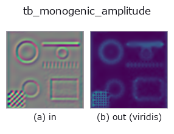

typed op• Datenarten: qimage → image
• Aufruf: fullseye.apply(img, "tb_monogenic_amplitude", a=0.5, b=0.5) (das 2-D-Modell ist ein Bild plus zwei skalare Regler a,b∈[0,1])

*Die Abbildung ist die tatsächliche Ausgabe auf einer synthetischen 128×128-Eingabe. Links Eingabe, rechts Ausgabe. Punktwolken als Draufsicht-Streudiagramm (Helligkeit = z), 1-D-Reihen als Linie, Volumen als Maximum-Projektion entlang z, Videos als mittleres Bild, komplexe Bilder als Betrag; Rückgabewerte, die kein Bild ergeben, werden als Werte gezeigt.*
*Die Ausgabe ist in einer viridis-artigen Falschfarbe dargestellt (dunkles Violett = klein, Gelb = groß), damit ein Feld von Größen — Abstand, Phase, Orientierung, Tiefe — lesbar ist.*
*Regler a ändert die Ausgabe nicht (gemessen: identisch bei 0,1 / 0,5 / 0,9).*
*Regler b ändert die Ausgabe nicht (gemessen: identisch bei 0,1 / 0,5 / 0,9).*
Stufen (die vorangehenden Ops → dieser Op, von links nach rechts):
▸ tb_monogenic_amplitude: stages (docs site)
Auf anderen Bildern (synthetische Szene / Foto / Münzen. Obere Reihe: Eingaben, untere Reihe: deren Ausgaben. Regler auf Standard):
▸ tb_monogenic_amplitude: other inputs (docs site)
Lokale Amplitude `sqrt(f^2 + R1^2 + R2^2)` eines monogenen Signals. → (H, W).
> Die ausführliche Beschreibung unten ist der Originaltext — Zusammenfassung und Überschriften sind übersetzt.
The local contrast at the signal's scale, and the confidence map for
:func:monogenic_phase / :func:monogenic_orientation, which mean nothing
where this is at the rounding floor. Raw / unnormalised (a contrast is a
metric quantity), in the same spirit as `complexops.cx_magnitude`.
For a unit-contrast grating at the band centre it is exactly 1.0 (measured
spread 8.9e-16 over a 64x64 frame) and, unlike a squared oriented-filter
response, it is *isotropic*: rotating the grating does not change it.
Measured over eight grid-exact orientations the amplitude spans
`[0.99999999999999911, 1.0000000000000011]` — a total spread of 2.0e-15
across all of them, which is the isotropy claim as a number.
Raises `ValueError`: the input is not a valid quaternion field, or its
`k component is non-zero (see :func:_require_monogenic`).
Typed bridge of the quat op `monogenic_amplitude into the 2-D evolution registry: the same implementation, called under the op(v, a, b) convention. This op has no tunable parameter; a and b` are unused.
• Katalog der Beispieldaten (Download-URLs / Lizenzen) — 2-D nutzt skimage.data (BSD/Public Domain) plus synthetische Bilder, 3-D nennt Download-URLs echter Datenquellen (Stanford, PDS, …).
• Herkunft und Literatur der Operatoren — die Quellen der Forschung/Verfahren, auf denen diese Operatorfamilie beruht.
Das Programm unten ist nachweislich lauffähig (gleiche Eingabe wie die Abbildung). In der Studio-Hilfe wird dieser Block zu Schaltflächen, die es sofort laden und ausführen.
img_to_monogenic 0.50 0.50 tb_monogenic_amplitude 0.50 0.50
▸ Load this pipeline · Load & run
Die folgenden Beispiele rufen den zugrunde liegenden Ledger-Op monogenic_amplitude auf. Dieser Brücken-Op ist dieselbe Implementierung, angepasst an die Konvention fn(v, a, b); das Verhalten gilt unverändert (nur die Aufrufform unterscheidet sich).
• quaternion_monogenic — py -3.11 examples/quaternion_monogenic.py
image als Eingabe)identity · gaussian · mean_box · bilateral · unsharp · median · min_filter · max_filter
typed)tb_points_to_voxel · tb_estimate_point_normals · tb_iss_keypoints · tb_angle_3points · tb_project_points · tb_render_point_depth · tb_statistical_outlier_removal · tb_radius_outlier_removal
*Provenance: ops.py — 2D Operator-Registry. Diese Notiz wird von tools/opdocs.py md erzeugt (nicht von Hand bearbeiten).*
© 2026 Kazufumi Furuse — Fullseye operator documentation. Licensed under Apache-2.0.
{kind=link}
{kind=link}